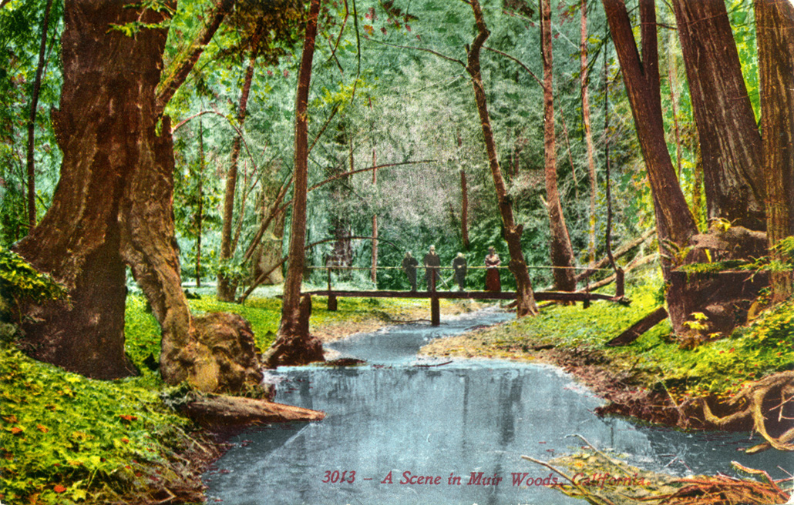

Muir Woods National Monument
Muir Woods National Monument is a unit of the National Park Service on the Pacific coast of southwestern Marin County, California, 12 miles north of San Francisco and part of the Golden Gate National Recreation Area.
Entry Fee: $ 7.00
Address: Mill Valley, CA 94941
Phone: (415) 388-2596
Management: U.S. National Park Service
Website: http://www.nps.gov/muwo/index.htm
User Reviews

Sam J.

Just Beautiful!
A great way to experience Muir Woods is to take the Ocean View Trail, The Lost Trail, and the Fern Creek Trail which completes the loop back to the main entrance.
The Ocean View Trail is a standard hike up the mountain. It's pretty draining on the body but you'll be in awe once you see that you end up as high as the redwood tree tops.
More reviews ...
-

-

-